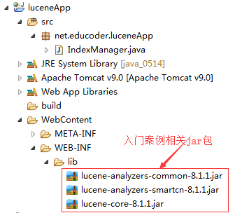

入门案例
创建web工程
导入jar包

jar文件分析
lucene-core-x.x.x.jar：lucene核心jar包（必选），该jar包放在core文件夹下
lucene-analyzers-smartcn-x.x.x.jar：智能中文分词器jar包，这是lucene提供的中文环境下最好用的中文分词器，该jar包放在analysis-->smartcn文件夹下
lucene-analyzers-common-x.x.x.jar（必选） : 分词器公共jar包，其它分词器都会依赖于该jar文件，
该jar包放在analysis-->common文件夹下
添加索引至索引库示例代码：
import java.nio.file.Paths; import org.apache.lucene.analysis.Analyzer; import org.apache.lucene.analysis.cn.smart.SmartChineseAnalyzer; import org.apache.lucene.document.Document; import org.apache.lucene.document.StringField; import org.apache.lucene.document.TextField; import org.apache.lucene.document.Field.Store; import org.apache.lucene.index.IndexWriter; import org.apache.lucene.index.IndexWriterConfig; import org.apache.lucene.index.IndexWriterConfig.OpenMode; import org.apache.lucene.store.Directory; import org.apache.lucene.store.FSDirectory; public class IndexManager { public static void main(String[] args) { // TODO Auto-generated method stub try { // 1、指定lucene索引库的目录 FSDirectory代表磁盘目录 Directory directory = FSDirectory.open(Paths.get("I:\\lucene_db\\tb_article")); // 2、创建分词器 采用智能中文分词器 注意：索引的CRUD必须使用相同的分词器 Analyzer analyzer = new SmartChineseAnalyzer(); // 3、创建IndexWriterConfig对象，通过IndexWriterConfig对象来指定创建索引的相关信息，比如指定使用什么分词器对数据进行拆分、索引的创建方式 IndexWriterConfig config = new IndexWriterConfig(analyzer); // 指定索引的创建方式 config.setOpenMode(OpenMode.CREATE_OR_APPEND); // 4、创建IndexWriter对象并指定索引库目录与config，索引的创建、更新、删除都是IndexWriter来实现 IndexWriter indexWriter = new IndexWriter(directory, config); // 5、创建Document对象，通过该对象封装需要保存的数据 Document document = new Document(); /* * 1. document.add(new Field(字段名, 字段值，是否存储); 2. * StringField与TextField的区别与特点以及Store.YES 与 Store.NO的特点将 在Lucene底层存储原理中详细分析 */ document.add(new StringField("articleId", "0001", Store.YES)); document.add(new TextField("title", "长沙旅游景点", Store.YES)); document.add(new TextField("content", "长沙岳麓山风景区，风景优美，是一个非常不错的旅游景点。", Store.YES)); // 6、通过indexWriter将数据写入至索引库 indexWriter.addDocument(document); // 7、提交事务 indexWriter.commit(); // 8、关闭流资源 indexWriter.close(); System.out.println("=======索引创建成功======"); } catch (Exception e) { // TODO: handle exception e.printStackTrace(); } } }